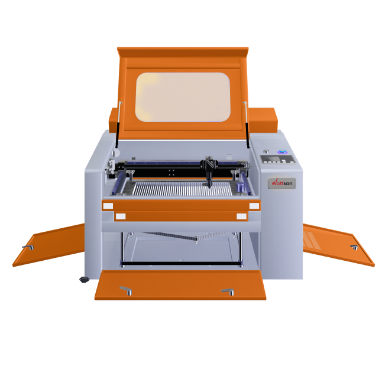
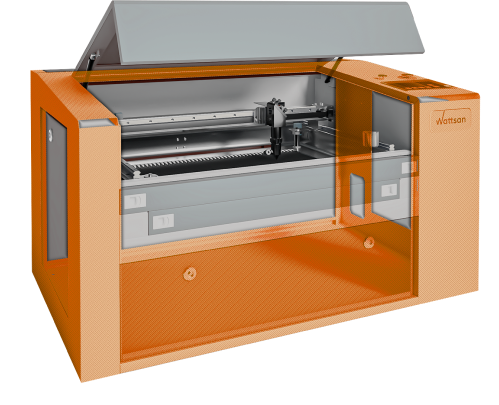
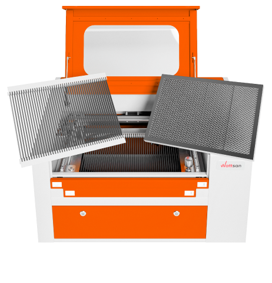

The frame structure makes the machines Wattsan unique
-

Hull thickness
The frame of the machine relieves vibration, especially during engraving, because the greatest moment of inertia is achieved during engraving.
It is importantto keep in mind the accuracy of the machine as well.
-

Frame construction
The frame of the machine relieves vibration, especially during engraving, because the greatest moment of inertia is achieved during engraving.
Wattsan machines have an enclosure thickness of 2.9 mm or greater on machines like the 1610 and larger.
The extra enclosure thickness increases machine life and performance.
-

Frame construction
The frame of the machine relieves vibration, especially during engraving, because the greatest moment of inertia is achieved during engraving.
It is important to keep in mind the accuracy of the machine as well.